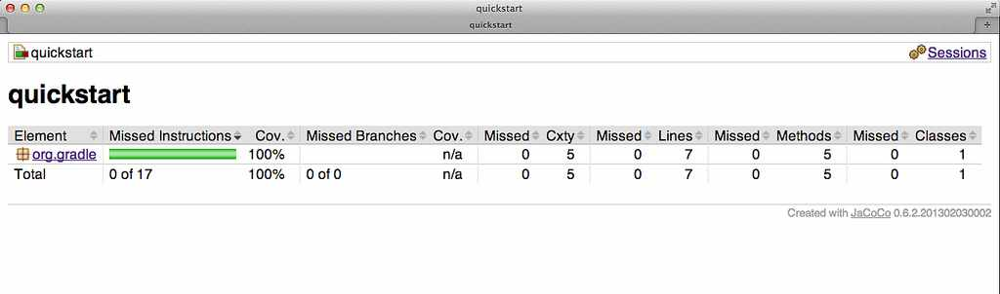

The JaCoCo plugin is currently incubating. Please be aware that the DSL and other configuration may change in later Gradle versions.
The JaCoCo plugin provides integration with JaCoCo, a code coverage library for Java.
To get started, apply the JaCoCo plugin to the project you want to calculate code coverage for.
If the Java plugin is also applied to your project a new task named jacocoTestReport is created.
Executing gradle jacocoTestReport will trigger the test task and afterwards the
jacocoTestReport to be executed. After the build has finished you find the JaCoCo code coverage report in
$buildDir/reports/jacoco/testHTML, XML and CSV.
As a default only the html report is generated.
The JaCoCo plugin adds a JacocoPluginExtension extension to the project,
which allows to configure the JaCoCo plugin.
Example 34.2. Configuring jacoco plugin settings
build.gradle
jacoco {
toolVersion = "0.6.2.201302030002"
reportsDir = new File(buildDir, "customJacocoReportDir")
}Table 34.1. Gradle defaults for JaCoCo properties
| Property | Gradle default |
| reportsDir | $buildDir/reports/jacoco" |
The JacocoReport task can be used to generate code coverage reports in different formats.
The current supported formats are
JacocoReport implements Reporting and allows the configuration of the report formats.
Example 34.3. Configuring test task
build.gradle
jacocoTestReport{
reports {
xml.enabled false
csv.enabled false
html.destination "${buildDir}/jacocoHtml"
}
}|  |
The JaCoCo plugin adds a JacocoTaskExtension extension to all tasks of type Test
This extension allows the configuration of the JaCoCo specific properties of a Test task.
Example 34.4. Configuring test task
build.gradle
test{
jacoco{
append = false
destPath = file("$buildDir/jacoco/jacocoTest.exec")
classDumpPath = file("$buildDir/jacoco/classpathdumps")
}
}Table 34.2. Default values of the JaCoCo Task extension
| Property | Gradle default |
| enabled | true |
| destPath | $buildDir/jacoco |
| append | true |
| includes | [] |
| excludes | [] |
| excludeClassLoaders | [] |
| sessionId |
auto-generated
|
| dumpOnExit | true |
| output | Output.FILE |
| address | - |
| port | - |
| classDumpPath | - |
| jmx | false |
Not only tasks of type Test can be used to gather code coverage data.
All tasks implementing JavaForkOptions can be configured to generate code coverage information.
For example you can configure your build to generate code coverage using the application plugin.
Example 34.5. Using application plugin to generate code coverage data
build.gradle
apply plugin: "application" apply plugin: "jacoco" mainClassName = "org.gradle.MyMain" jacoco { applyTo run } task applicationCodeCoverageReport(type:JacocoReport){ executionData run sourceSets sourceSets.main }
Note: The code for this example can be found at samples/testing/jacoco/application which is in both the binary and source distributions of Gradle.
Example 34.6. Coverage reports generated by applicationCodeCoverageReport
Build layout
application/
build/
jacoco/
run.exec
reports/jacoco/applicationCodeCoverageReport/html/
index.htmlFor projects that also use the Java Plugin, The JaCoCo plugin automatically adds the following tasks to project:
Table 34.3. JaCoCo plugin - tasks
| Task name | Depends on | Type | Description |
jacocoTestReport
|
- | JacocoReport |
Generates code coverage report for the test task. |
The JaCoCo plugin adds the following dependency configurations:
Table 34.4. JaCoCo plugin - dependency configurations
| Name | Meaning |
jacocoAnt
|
The JaCoCo ant library used running the JacocoReport and JacocoMerge task |
jacocoAgent
|
The JaCoCo agent library used for instrumenting the code under test |